Created: January 20, 2011
By: Jason Bobich
My Blog: JasonBobich.com
Follow Me: Twitter.com/jasonbobich
Thank you for purchasing my theme. If you have any questions that are beyond the scope of this help file, please feel free to email via my user page contact form here. And if you like the theme, please go to your Theme Forest downloads page and give this product a 5 star rating :-) Thanks so much!
Here you can get an idea of how the default HTML markup is constructed. It may seem a bit more complicated than many other themes with extra markup and some redundancies. However, this is all necessary in order to make theme as customizable as it and make sure those virtually endless amount of combinations work in as many browsers as possible. Think of it of like a 1,000-in-1 theme, and it'll make sense why there's so much HTML markup.
I've done my best to try and keep this theme modern, while still allowing for people using older browsers to enjoy the awesomeness, as well. This theme uses valid HTML5 code and many CSS3 properties. However, this theme should be still (for the most part) compatible with IE7, IE8, Firefox 3+, Safari, Opera, and Chrome.
In each of the document diagrams below, you will see red-dotted lines that separate your site-wide header and footers. This is meant to help you if you're looking to make the template more dynamic by putting it into a dreamweaver template, PHP script, etc.
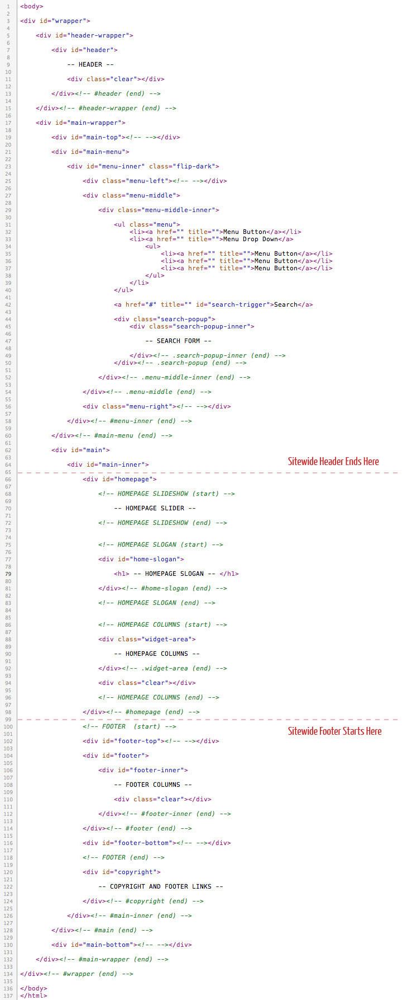
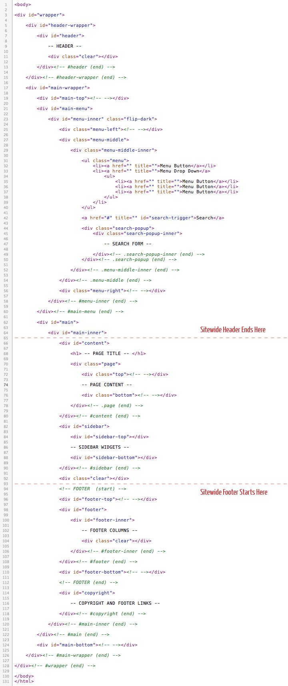
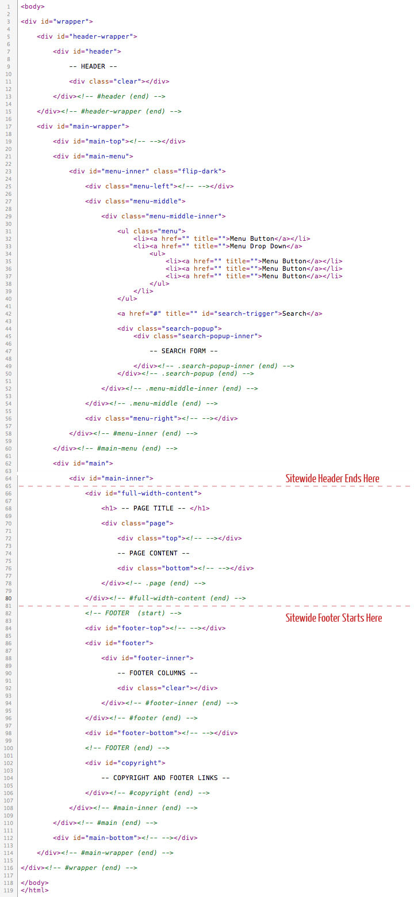
With this theme, there are three different kinds of pages, you can use the built-in CSS grid system - homepage, standard 2-column page, and a standard full width page.
Here are the classes available for use on your column DIV's:
Here's an example of how the grid can be put to work:
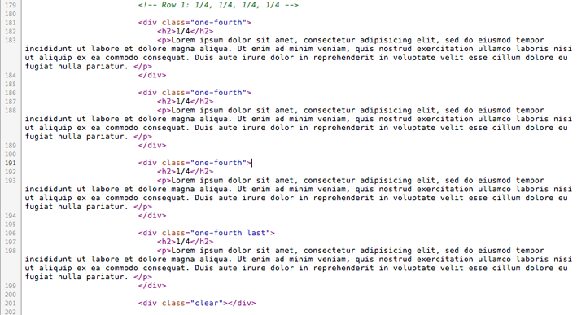
This themes comes packed with many possible layouts you could achieve. Following in this section of documentation, you will see how easy it is to change the major layout options of this theme with some simple changes to what CSS files are called and what classes are used.
For the body shape, you have two options - Stretch or Boxed?
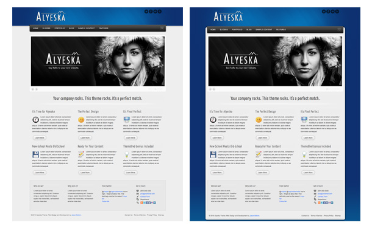
In the head of your HTML markup, you can enter in the value "stretch" or "boxed" as indicated in the image below.
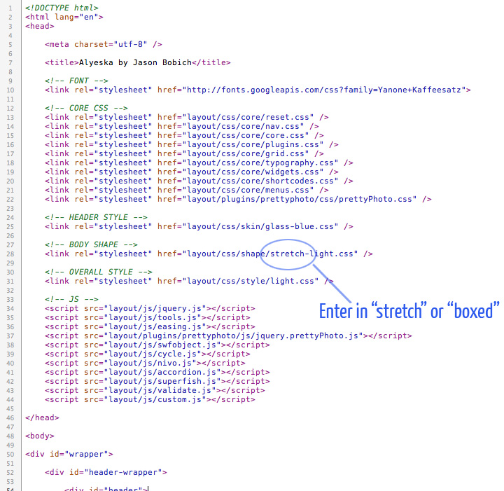
For the body style, you also have two options - Light or Dark?
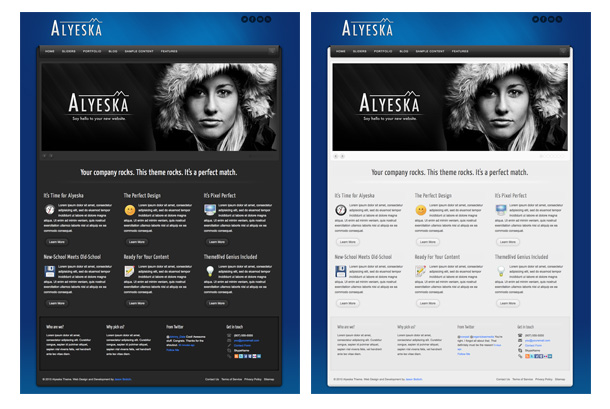
In the head of your HTML markup, you can enter in the value "light" or "dark" as indicated in the image below.
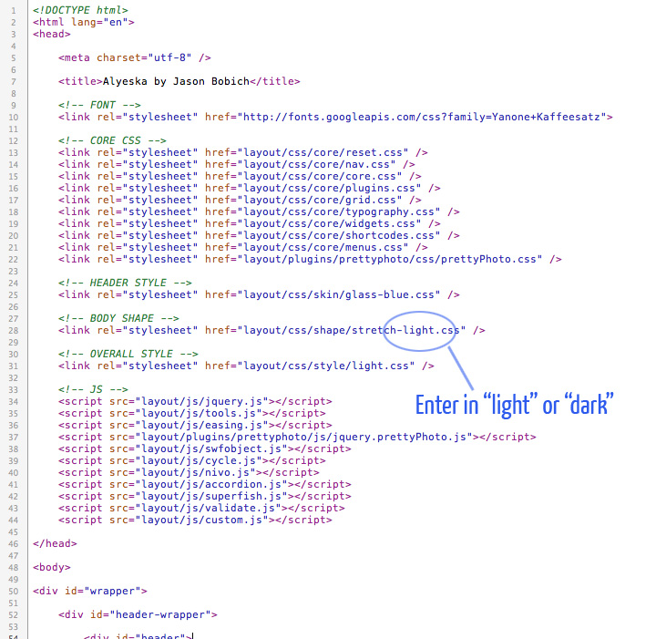
With this theme, you're given a total of 225 skins to choose from. Basically, there are 15 colors and 15 textures to choose from. Putting that together, there are 225 CSS files you could call for the skin of your site.
15 Colors Values:
15 Texture Values:
So, for example, if you wanted to use the color "blue" with the "glass" texture, you'd call the "glass-blue.css" file in the head of your HTML. See screenshot below.
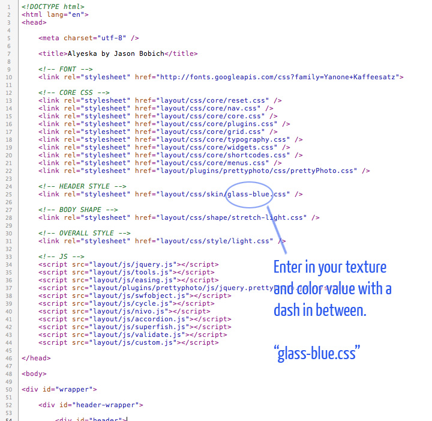
Unlike the "body" and "skin" options, the menu color and shape is not determined by calling a separate CSS file, but by using a different CSS class for the menu. You're given 15 color choices and two menu shapes.
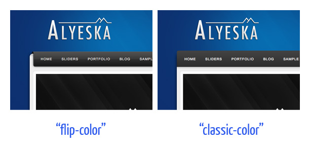
30 Available Menu Classes:
So, for example, if you wanted to use "flip" shape with the color "dark", you'd use the class "flip-dark" in your HTML. See screenshot below.
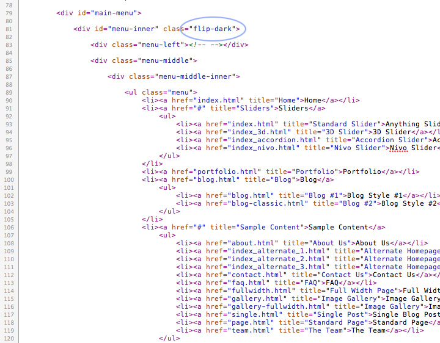
Currently, you will see there are only four social buttons in the top right corner of the theme. However, many more have been included with the theme. There are 19 icons included for use as buttons with pre-set CSS classes, as well as two styles (light and dark) included for each. Below is a full list of available button classes you can use.
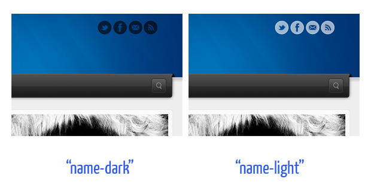
These classes are utilized in the code as shown in the screenshot below. The current example includes 4 buttons, however you can add on as many as you want using the classes below.
In the screenshot below, you can see how these buttons classes are utilized in the code.
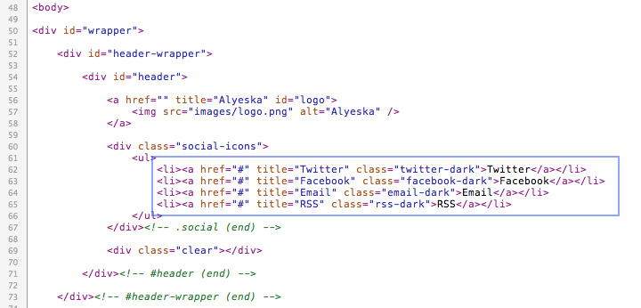
If you're keeping this theme as simply a static HTML template, there's a good chance you won't need the search bar that pops up from the main menu. So, I've made sure to make it so if you remove it, nothing else will be effected.
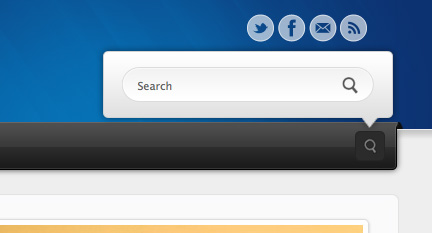
If you'd like the search removed from your site, simply delete the code highlighted in the screenshot below.
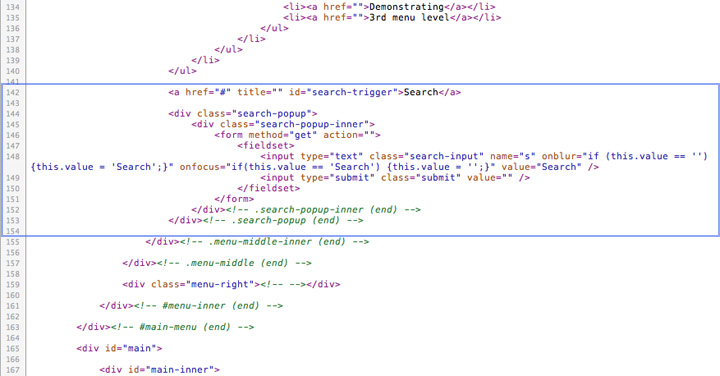
This theme utilizes the Google Font Directory and CSS3's @font-face in order to bring you the most modern way of inserting a fancy font into your theme.
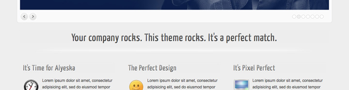
Currently all of the header fonts for this theme are using the Google Font Directory's Yanone Kaffeesatz font. You can easily change the header font by including a new font from the Google Font Directory or any source you like, and then changing the appropriate CSS. Both steps are outline with the screenshots below.
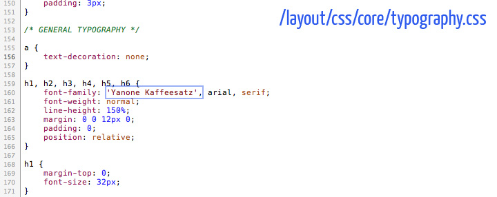
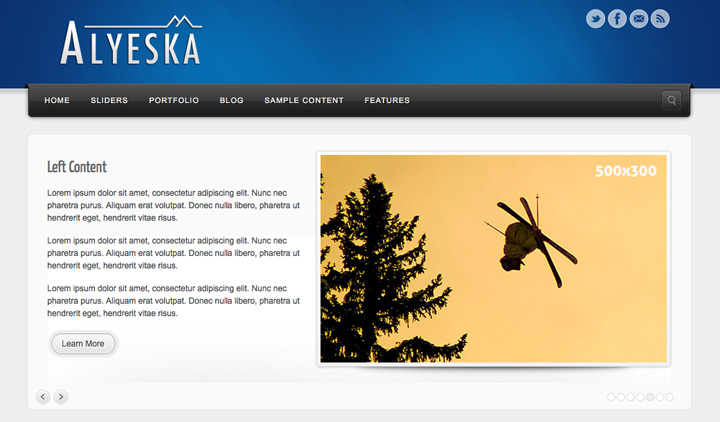
This theme's "Anything Slider" is powered by Cycle, an amazing jQuery plugin by Malsup. There are many features we're not actually utilizing in this theme that you could potentially do with the plugin. I recommend you read through their documentation if you're looking to customize the slider further.
Basically, with Cycle, you can designate a particular HTML element's ID or class when you call the cycle jQuery function. Then, it will take the top-level elements from within and produce the slides of the slideshow out of them. For example, you could designate an ID of a an unordered list, and then Cycle would use all of the list items within as the slides for the slideshow.
<ul id="slideshow"> <li>List Item</li> <li>List Item</li> <li>List Item</li> <li>List Item</li> </ul>
In the case of this theme's default homepage, we have a DIV that surrounds the slideshow and then DIV's within that serve as the individual slides. The basic setup is something like this:
1) The JavaScript
<script>
jQuery.noConflict()(function($){
$(document).ready(function() {
$("#homepage-slideshow .slideshow").cycle({
fx: "fade",
timeout: 5000,
pager: "#homepage-slideshow .slideshow-dots",
pagerAnchorBuilder: paginate,
next: '#homepage-slideshow .next',
prev: '#homepage-slideshow .prev',
speed: "2000",
pause: 1,
easing: "easeInOutQuint"
});
});
});
</script>
2) The HTML Markup
<div class="slideshow"> <div class="slide"> Content of slide 1... </div> <div class="slide"> Content of slide 2... </div> <div class="slide"> Content of slide 3... </div> <div class="slide"> Content of slide 4... </div> </div>
Note: On the default homepage, the individual slide DIV's are styled to be 940x350. You can put whatever HTML content you like within that area. Also, take note the actual HTML markup in the theme is a little more complicated than what you see here. There is more going on in order to add navigation and styling around the slideshow. However, this code snippet should give you an idea of how it all works in the simplest form.
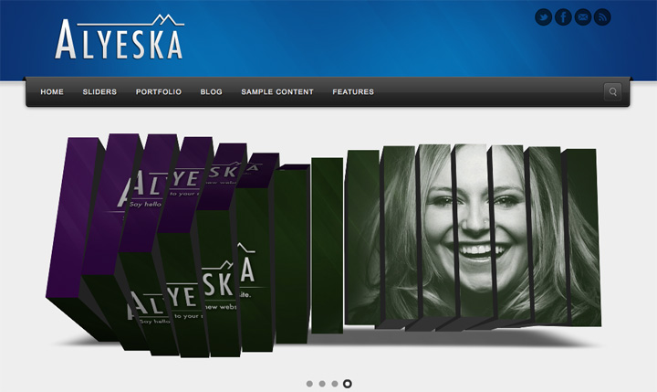
This theme's 3D slider is powered by Piecemaker, an amazing open-source flash plugin. This theme includes a very basic installation of this plugin. For more support or advanced configuration, visit their official website.
I've included all of the files to make Piecemaker work in one place:
/layout/plugins/piecemaker/
There, you will find Piecemaker's SWF file, the CSS file, and the XML file. The XML file is probably the most important to take note of, as it's where you setup everything that gets inserted into the slideshow.
To actually place the slideshow into a page, you need to insert the flash object. In the example in this theme, it's being inserted with the famous SWFObject method.
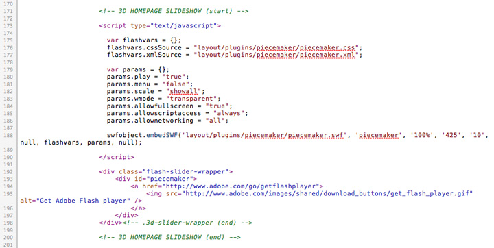
Warning: Be careful with how you configure Piecemaker. In the XML file, some of the settings with how the cubes move has been set to work well with this theme. The cubes move back a bit before rotating in order for them not to hit the edges of the limited space available for the slideshow.
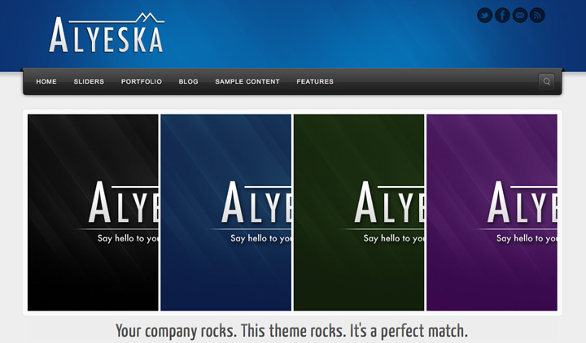
For the accordion slideshow, this theme uses the Kwicks plugin. It's not as easy to edit as some of the plugins we're using with this theme. The configuration requires that you set the width of each element with CSS. So, you'll need to know how many elements you plan to have, and then do the math on how wide each element needs to be in order for them to fit.
In the example in this theme homepage, I'm using 4 images with 4px of spacing in between each section. So, each piece has been set with CSS to be 232px wide. The total area of the slideshow is 940px, and so it all works out like this:
232px + 4px + 232px + 4px + 232px + 4px + 232px = 940px
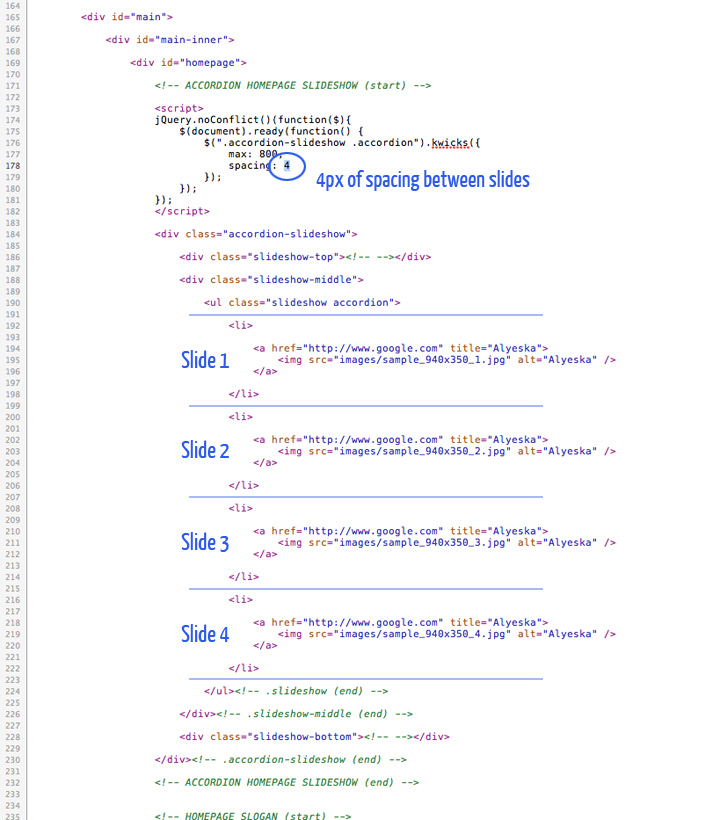
Note: You can find all of the CSS located in /layout/css/core/core.css. Search for ACCORDION.
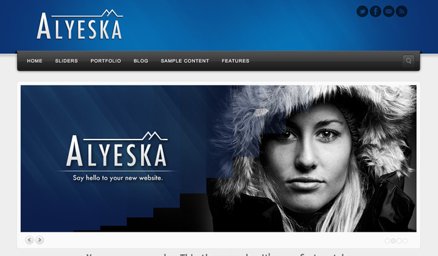
The Nivo Slider is a pretty neat little plugin that's relatively easy to use. See the official website on documentation for using. It's much more limiting than this theme's anything slider, but cool none-the-less. If you like the fancy transitions and you're okay with just having images for your slider, then go for it!
Here's the gist of how it gets inserted into a page on your site. Note that I've removed all of the styling and navigation HTML markup so you can get an idea of how it works at its core.
1) The HTML Markup
<div class="slideshow"> <a href="http://www.google.com" title="Alyeska"> <img src="images/sample_940x350_1.jpg" alt="Alyeska" /> </a> <a href="http://www.google.com" title="Alyeska"> <img src="images/sample_940x350_2.jpg" alt="Alyeska" /> </a> <a href="http://www.google.com" title="Alyeska"> <img src="images/sample_940x350_3.jpg" alt="Alyeska" /> </a> <a href="http://www.google.com" title="Alyeska"> <img src="images/sample_940x350_4.jpg" alt="Alyeska" /> </a> </div><!-- .slideshow (end) -->
2) The JavaScript
<script>
jQuery.noConflict()(function($){
$(document).ready(function() {
$(".slideshow").nivoSlider({
effect: "sliceDown",
directionNavHide: false
});
});
});
</script>
All source related files having to do with CSS, images, JavaScript, and plugins have been organized within the layout directory.
Any images not being called from with CSS are located within the root images directory.
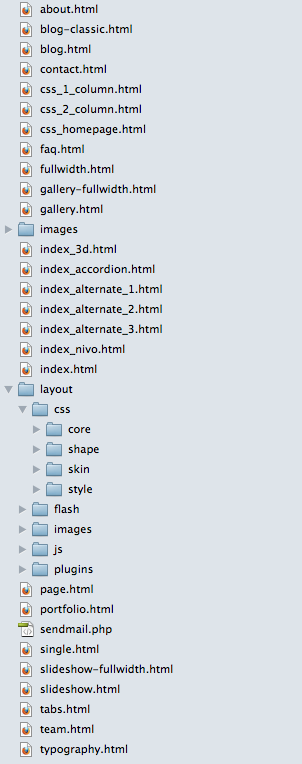
Within the /layout/css directory, you will find all of the CSS files organized within four directories.
This directory contains all of the core CSS files that makeup the overall shaping of the theme. Essentially, you'll find everything in here that's not related to colors.
These CSS file accomplish any slight modifications needed in order for the theme to go from stretch to boxed or visa versa. You'll find four CSS files in here - boxed-dark.css, boxed-light.css, stretch-dark.css, and stretch-light.css
The skin is the overall colors of the outer background of the theme, as well as the link colors. Here you will find 150 CSS files that allow for 15 colors combined with 10 textures (i.e. 15x10 = 150).
These CSS files control the general styling that go with theme (as far as light vs dark) that don't effect the theme shape. You'll find two files in here - light.css and dark.css. For example, any stylings in the dark.css file will apply to both the dark boxed and dark stretch layout shapes.
Within /layout/js/, there are 10 JavaScript files. Most of these are included in order to make certain plugins work. Ideally, you wouldn't want to have so many JS files called in the header of an HTML document, however I've done it this way in order to make the theme easier to edit. The theme will work just fine the way it is. It's just not the absolute most efficient way is all. If you're on a cheaper hosting account and you experience extreme slowness in the loading of your site, one option may be to copy and paste all the theme's different JavaScript into a single file to cut down on the http requests to different JavaScript files in your HTML document.
The most important JavaScript file included is custom.js. If you edit any JavaScript, this should be the only file you edit. All other files are plugin JS files and should never be edited other than to update the plugin from the plugin author's website. See the Sources and Credit section at the bottom of this documentation to find links to many of their websites.
There are only two Flash files included with this theme outside of the Piecemaker plugin. These include an audio payer and a video player. They were developed specifically for use in ThemeBlvd themes. You will find these two SWF files in the /layout/flash/ directory.
Below are the fonts used in the Photoshop files included with this theme.
I would like to thank the following providers. This theme wouldn't have been possible without the hard work and dedication of all of them.
Once again, thank you so much for purchasing this theme. As I said at the beginning, I'd be glad to help you if you have any questions relating to this theme. No guarantees, but I'll do my best to assist. If you have a more general question relating to the themes on Theme Forest, you might consider visiting the forums and asking your question in the "Item Discussion" section. And if you like the theme, please go to your Theme Forest downloads page and give this product a 5 star rating :-) Thanks so much!